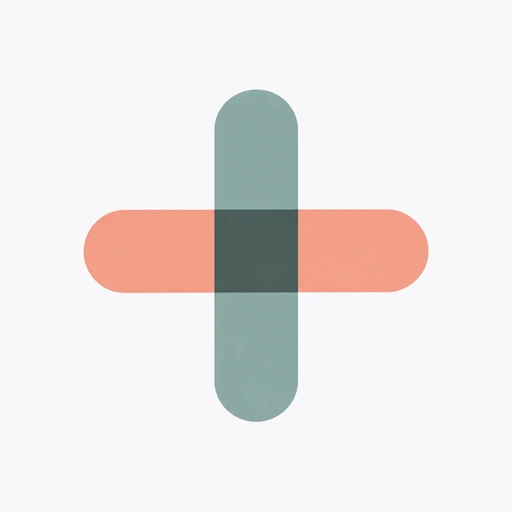
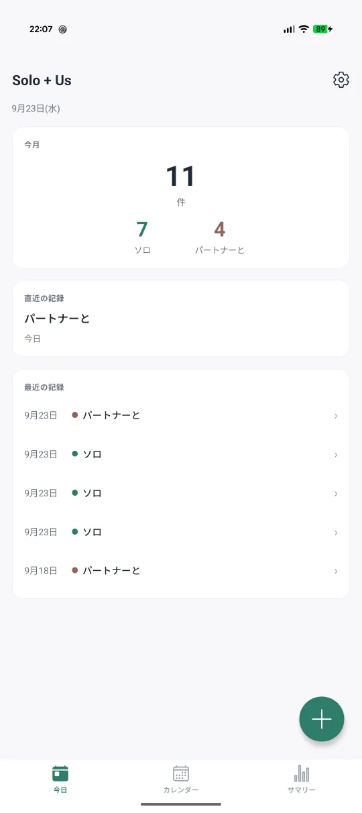
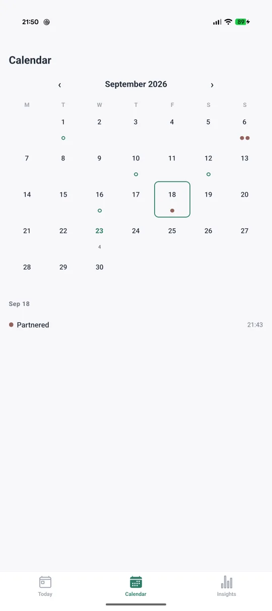
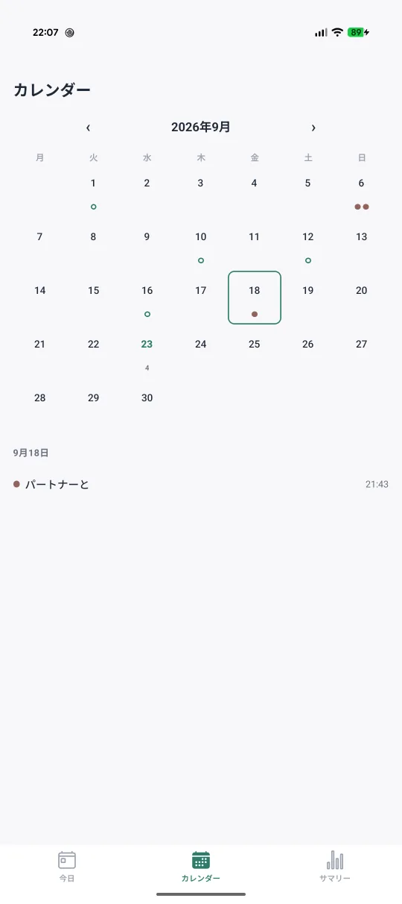
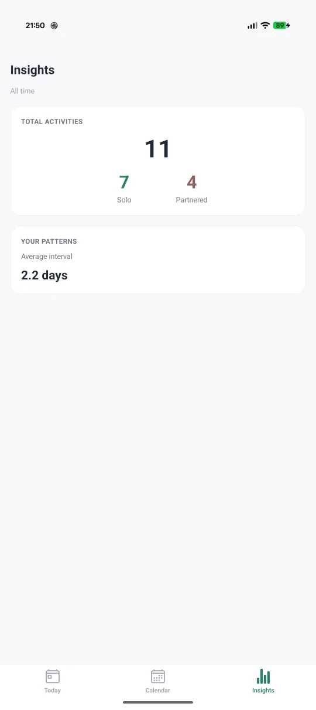
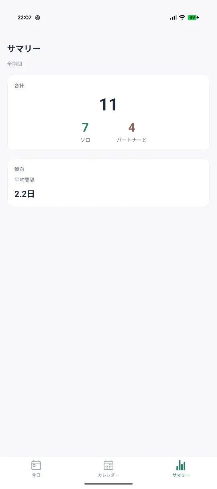
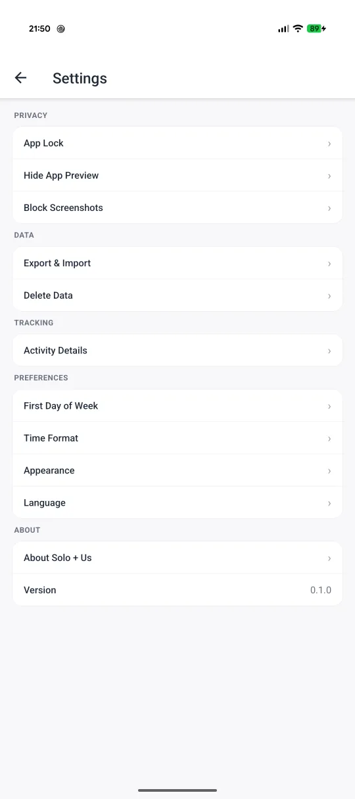

Record in seconds
数秒で記録
One tap for Solo or Partnered, with Undo right there and the date and time editable afterwards.
ソロかパートナーとを1回タップするだけ。間違えてもその場で取り消せ、日時はあとから変更できます。
Solo + Us is a private log for sex and self-pleasure, whether you are on your own or with a partner. Everything stays on your device - no account, no server to sync with, and no advertising.
Solo + Us は、性行為と自慰行為を記録するアプリです。パートナーとの時間も、ひとりの時間も、自分だけの記録として残せます。データはすべて端末の中に保存され、アカウント登録もサーバーとの同期も広告もありません。
Free on Google Play. For adults aged 18 and over.
Google Playで無料。18歳以上の方が対象です。

Choose Solo or Partnered and it is logged, with Undo right there. Details are optional and never asked for while recording, and the date and time can be edited afterwards.
ソロかパートナーとを選ぶだけで記録できます。間違えてもその場で取り消せます。詳細項目は任意で、記録のときに尋ねられません。日時はあとから変更できます。


One tap for Solo or Partnered, with Undo right there and the date and time editable afterwards.
ソロかパートナーとを1回タップするだけ。間違えてもその場で取り消せ、日時はあとから変更できます。
Protection, orgasm, duration, mood before and after, and a free-text note. All optional, and never asked for while recording.
避妊、オーガズム、所要時間、前後の気分、自由記入のメモなどから選べます。すべて任意で、記録のときに尋ねられません。
A month at a glance, a calendar view, and totals with your average interval between entries.
今月の件数、カレンダーでの月表示、合計と記録の平均間隔を確認できます。
Your records live in an encrypted database on your phone. There is no account to create and no server to sync with.
記録は、端末内の暗号化されたデータベースに保存されます。アカウント登録も、サーバーとの同期もありません。
App Lock with your device's fingerprint, face or passcode, a hidden preview in Recent Apps, and optional screenshot blocking.
端末の指紋 / 顔 / パスコードによるアプリロック、アプリ履歴でのプレビュー非表示、スクリーンショットのブロック（任意）。
Export a full JSON backup or a CSV for your own analysis, and import a backup to restore.
JSON で完全なバックアップを、CSV で分析用の書き出しができ、バックアップからの復元にも対応しています。
Real screens from the app.
実際のアプリ画面です。






Free on Google Play.
Google Playで無料ダウンロードできます。